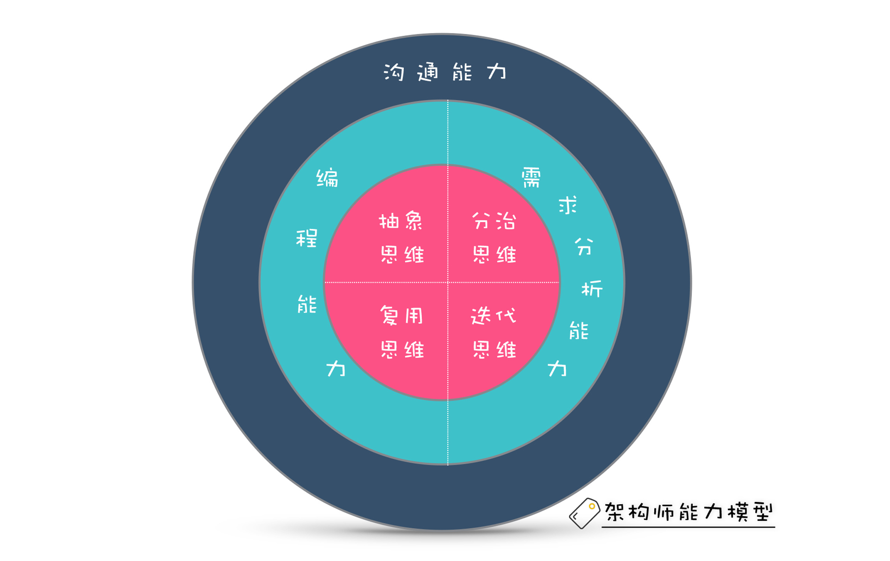

- 00 开篇词 你为什么应该学好软件工程？.md.html
- 01 到底应该怎样理解软件工程？.md.html
- 02 工程思维：把每件事都当作一个项目来推进.md.html
- 03 瀑布模型：像工厂流水线一样把软件开发分层化.md.html
- 04 瀑布模型之外，还有哪些开发模型？.md.html
- 05 敏捷开发到底是想解决什么问题？.md.html
- 06 大厂都在用哪些敏捷方法？（上）.md.html
- 07 大厂都在用哪些敏捷方法？（下）.md.html
- 08 怎样平衡软件质量与时间成本范围的关系？.md.html
- 09 为什么软件工程项目普遍不重视可行性分析？.md.html
- 10 如果你想技术转管理，先来试试管好一个项目.md.html
- 11 项目计划：代码未动，计划先行.md.html
- 12 流程和规范：红绿灯不是约束，而是用来提高效率.md.html
- 13 白天开会，加班写代码的节奏怎么破？.md.html
- 14 项目管理工具：一切管理问题，都应思考能否通过工具解决.md.html
- 15 风险管理：不能盲目乐观，凡事都应该有B计划.md.html
- 16 怎样才能写好项目文档？.md.html
- 17 需求分析到底要分析什么？怎么分析？.md.html
- 18 原型设计：如何用最小的代价完成产品特性？.md.html
- 19 作为程序员，你应该有产品意识.md.html
- 20 如何应对让人头疼的需求变更问题？.md.html
- 21 架构设计：普通程序员也能实现复杂系统？.md.html
- 22 如何为项目做好技术选型？.md.html
- 23 架构师：不想当架构师的程序员不是好程序员.md.html
- 24 技术债务：是继续修修补补凑合着用，还是推翻重来？.md.html
- 25 有哪些方法可以提高开发效率？.md.html
- 26 持续交付：如何做到随时发布新版本到生产环境？.md.html
- 27 软件工程师的核心竞争力是什么？（上）.md.html
- 28 软件工程师的核心竞争力是什么？（下）.md.html
- 29 自动化测试：如何把Bug杀死在摇篮里？.md.html
- 30 用好源代码管理工具，让你的协作更高效.md.html
- 31 软件测试要为产品质量负责吗？.md.html
- 32 软件测试：什么样的公司需要专职测试？.md.html
- 33 测试工具：为什么不应该通过QQ微信邮件报Bug？.md.html
- 34 账号密码泄露成灾，应该怎样预防？.md.html
- 35 版本发布：软件上线只是新的开始.md.html
- 36 DevOps工程师到底要做什么事情？.md.html
- 37 遇到线上故障，你和高手的差距在哪里？.md.html
- 38 日志管理：如何借助工具快速发现和定位产品问题 ？.md.html
- 39 项目总结：做好项目复盘，把经验变成能力.md.html
- 40 最佳实践：小团队如何应用软件工程？.md.html
- 41 为什么程序员的业余项目大多都死了？.md.html
- 42 反面案例：盘点那些失败的软件项目.md.html
- 43 以VS Code为例，看大型开源项目是如何应用软件工程的？.md.html
- 44 微软、谷歌、阿里巴巴等大厂是怎样应用软件工程的？.md.html
- 45 从软件工程的角度看微服务、云计算、人工智能这些新技术.md.html
- 一问一答第1期 30个软件开发常见问题解决策略.md.html
- 一问一答第2期 30个软件开发常见问题解决策略.md.html
- 一问一答第3期 18个软件开发常见问题解决策略.md.html
- 一问一答第4期 14个软件开发常见问题解决策略.md.html
- 一问一答第5期 22个软件开发常见问题解决策略.md.html
- 学习攻略 怎样学好软件工程？.md.html
- 特别放送 从软件工程的角度解读任正非的新年公开信.md.html
- 结束语 万事皆项目，软件工程无处不在.md.html
- 捐赠
23 架构师：不想当架构师的程序员不是好程序员
你好，我是宝玉，今天我想与你讨论一下要想成为架构师，你需要具备哪些能力。
很多程序员的梦想，就是将来能成为一名架构师。包括我刚学编程那时候，也是以当架构师为目标，觉得不想当架构师的程序员不是好程序员，希望将来能成为一个优秀的架构师。就像拿破仑那句名言：“不想当将军的士兵不是好士兵。”
随着工作经历的增多，我也开始参与到架构设计中。对架构设计了解的越多，我越发觉得，其实做架构设计，并不代表一定要有一个架构师的头衔。
拿破仑那句名言，原句是“Every French soldier carries a marshal’s baton in his knapsack”，意思是“每个士兵背包里都应该装有元帅的权杖”。
元帅的权杖，意味着大局观，元帅的思维方式。当士兵背包里装有元帅的权杖，就意味着士兵也能胸中有大局观，能有元帅的思维，理解元帅在特定战场上想什么，这样能更好的执行命令，提升整体的战斗力。
其实拿破仑的本意是激励每一名上战场的士兵都要有大局观，有元帅的思维，并不需要每一个人都一定去当将军、当元帅。
这也适用于技术领域，对于程序员来说，并不代表一定要有一个架构师的头衔，而是心中有大局观，有架构师的思维，从而能理解架构设计，能写出好的程序。
什么是架构师思维？
通过上一篇的学习，我们知道架构设计，是要控制技术的复杂性。对于架构师来说，要控制技术复杂性，有几种有效的方式：抽象、分治、复用和迭代。
架构师思维，其实就是这几种思维的集合。
抽象思维
抽象思维可以说是整个架构设计的基础。因为对于架构设计来说，是要为了满足业务需求的，而业务需求都是一些文字性的描述、原型、UI 设计图，这些需求要最终变成代码让机器执行，就必须先进行抽象，抽象成计算机能识别的模型。
其实抽象思维我们不陌生，因为我们从小学习的数学，就有很多抽象思维的训练。举例来说，我们小时候做的鸡兔同笼问题，看起来很复杂，但是如果我们会二元一次方程，把鸡抽象成 x，兔子抽象成 y，就可以用二元一次方程列出相应的方程式，从而求出解。
在软件项目中，遇到类似的场景，就会考虑抽象出来，总结一个规则和方法。有时候即使场景不同，也可以把其中有共性的内容抽象出来，可以更方便的使用。
举个例子，我们在之前文章中有对极客时间专栏做用例分析，其中有四个角色：编辑、作者、未订阅用户和订阅用户。其实这四种角色，都可以抽象成“用户”模型，然后通过对用户设置不同的角色属性，来应用成不同的角色。
还有像极客时间专栏的一篇文稿、视频课程的一节视频课，都有标题、内容、作者、留言等信息，所以可以抽象成“文章”模型，通过文章的类型、内容来区分专栏文稿还是视频课。
在架构设计中，对需求进行抽象建模后，可以帮助我们隐藏很多无关紧要的细节，我们在高层次的架构设计时，可以关注在几个主要的模型上，而不必关心模型内的细节实现。
分治思维
架构设计的一个重点，就是要对复杂系统分而治之，分解成小的、简单的部分。但光分解还是不够的，同时还需要保证分解后的部分能够通过约定好的协议集成在一起。
分治思维在架构设计中有很多经典的应用。比如说上一篇介绍的分层架构，把 UI 部分与其业务逻辑部分隔离，这样这两部分就既可以各自进行变更，又互不影响。比如说 UI 交互修改，不需要修改业务逻辑代码，业务逻辑部分对性能进行优化，不需要修改 UI 界面。而每层之间，可以通过约定好的方法或者 API 进行交互。
还有像我们平时说的大数据，高并发这些复杂问题，也是通过分治来解决的。要知道单台机器，无论你性能如何优化，都是有其极限的。而像“双十一”这种高峰时刻，瞬间的流量可能是几百、几千万，就需要通过设计合理的策略，分化到不同的服务器，让每个服务器的流量不至于太大。参考：秒杀系统优化思路。
这种分治的思维其实不仅适用于架构上，也适用于平时程序员写代码。比如说有些程序员写代码，喜欢把大量的逻辑放在一个方法或者一个类里面，最后极其难以理解和维护，如果能分拆成几个小的方法或者小的类，不仅结构更清晰，也更容易理解和维护。
复用思维
复用是一种非常简单有效的提升开发效率的方法，通过对相同内容的抽象，让其能复用于不同的场景。
举例来说，我们前面提到极客时间的专栏和视频课程，可以作为两个不同的模块进行开发，但是实际上内容差不多，如果能抽象成同一个“课程”模块，这样专栏和视频课程的模块就可以复用“课程”模块，不需要维护两份相似的代码，进而提升开发和代码维护的效率。后面如果要增加每日一课和微课，也不需要重新开发，只要复用之前的“课程”模块即可。
以前我在 DePaul 读书时，要给学校做一个教学播放的软件，由于当时技术框架选的是 React，而 React 没有合适的视频播放组件，于是我只好自己实现了一个。实现完成之后，我觉得这个视频播放功能肯定有很多人也需要，如果能复用的话会很实用。于是我把它封装后放到 GitHub 上，解决了很多人需要在 React 中播放视频的需求。到现在已经有超过 1000 个 Star。
复用思维在日常写程序的时候也很常用，比如有的程序员喜欢复制粘贴代码，所以经常看到很多重复的代码，如果要修改，得修改好几个地方。如果能把这些重复的代码提取成公共的类或者方法，就可以减少很多重复，让代码更简洁和易于维护。
迭代思维
好的架构设计，通常不是一步到位，而是先满足好当前业务需求，然后随着业务的变化而逐步演进。
就像淘宝这样的业务，它背后的架构设计也不是一步到位成现在这样，拆分成好多微服务。最开始，它也只是个普通的分层架构，后来随着业务不断扩展，逐步迭代成今天这样复杂的架构。
这种迭代的思维，在写程序时也很重要。因为很多程序员喜欢追求完美，期望能一步到位，然而这样带来的问题是开发成本会大量增加，导致进度延误。另一方面，如果对需求的变化预测不正确，就会有很多冗余的代码，后面难以维护。
其实，开发人员对以上提到的这些思维模式都不陌生，只是在实践的时候，总是有意无意地忽略了。
好的架构师什么样？
对于程序员来说，培养架构师思维，并不是很难的事情。然而要成为好的架构师，光有架构师思维还不够。
一个好的架构师，不仅技术要好，还要懂业务；能从整体设计架构，也能在局部实现功能。
比如说一个做互联网软件架构设计有丰富经验的架构师，要去做建筑行业软件的架构设计，短时间内一定是很难设计出好的架构，因为他需要先熟悉建筑行业软件的业务，才能设计出符合业务特点的架构。
有一种架构师叫“PPT 架构师”，也就是说擅长写 PPT，画架构图。对各种热门的名词如数家珍。但是脱离一线开发，对业务和底层基础知识知之甚少。这样的架构师设计出来的架构，通常是不接地气的，实现起来会非常困难，成本也高。
因为作为架构师，如果不写代码，是不能体会出设计不好带来的问题，无法及时地对架构中的问题做出调整。
所以好的架构师，一定要是程序员出身，并且能坚持做一线程序员。也许他不需要写大量的业务代码，但至少要参与一部分编码工作，以及代码审查工作，以保证架构的正确执行。
好的架构师，不仅要有技术深度，还要有一定的技术广度。因为技术的选型，通常不能局限于一种技术，需要根据业务特点和团队特点灵活地选择。
好的架构师还有一个能力就是沟通能力。作为程序员，可能把自己的模块开发好就不错了，相对不需要太多的沟通工作。但是架构师就不一样，除了架构设计，还有大量沟通工作。
首先架构师要经常和产品经理打交道，反复确认需求，了解需求细节，只有这样才能分析清楚需求，了解各种用户场景。
然后架构师设计出来的架构，要通过文档、会议来讲给其他人听，能让其他人理解架构，用好架构。
所以要成为好的架构师，需要具备几个条件。
- 有架构师思维：具备良好的抽象思维、分治思维、复用思维和迭代思维；
- 懂业务需求：能很好地理解业务需求，能针对业务特点设计好的架构；
- 有丰富的编码经验：像抽象、分治、复用这些能力，都需要大量的编码练习才能掌握；另外保持一定量的编码经验也有助于验证架构设计；
- 良好的沟通能力：架构师需要沟通确认需求，需要让团队理解架构设计。
具备了这些条件，就可以成为很好的架构师，设计出好的架构，组织好人员和技术，低成本的满足好需求和需求变化，以及系统的运行。

如何成为好的架构师？
想要成为好的架构师，没有什么捷径，需要比普通程序员更多的努力才行。如果你有志向成为架构师的话，我的建议是：
- 要成为一个优秀的程序员
技术好是成为架构师的基础条件。需要让你的代码容易读，容易扩展，能重用。这样通过大量的编码实践，才能逐步地培养出好的架构师思维。
- 多模仿多学习
在刚开始的时候，不用想着闭门造车，想出一个特别牛的架构。反倒不如先把业界成熟的流行的架构吃透，用好。
现在网络上也有很多好的开源项目，这些开源项目都有良好的架构设计，可以找几个跟你研究方向相关的项目，本地搭建一下，然后自己试一下，最好能弄一个自己的项目二次开发或者模仿一遍，做中学，是最简单有效的。
我以前在用 Asp.Net 的时候，就基于一个开源的 Asp.Net 项目 Community Server 做了大量的二次开发工作，这对我后来做架构设计帮助非常大，因为我从里面学习和实践了很多非常好的架构设计思想。
- 选择好行业和平台
软件其实下面细分了很多行业领域，大类有像互联网应用、企业应用、游戏应用，大类下面又有细分的小类。比如说企业应用又和各行各业的业务结合在一起的，像建筑行业软件，就需要有建筑行业的专业知识。
前面我说过，架构师要同时懂业务和技术，而这些行业知识，也不是短时间内能积累起来的。所以如果想当架构师，最好能选择一个合适的行业，能在一个行业里面早点积累足够的行业知识，后面做架构设计的时候，就能更好地设计出符合业务特点的架构。
同时，这些行业领域的业务经验，和技术结合的架构经验，也会成为你个人独特的优势，不容易被替代。
还有平台也很重要，好的平台，能给你更多的实践机会。所以你看极客时间上那些开课讲架构、微服务的，无一例外都是大厂出来的，因为只有大厂，才有机会去实践这种高并发大数据的架构设计。
如果你有志成为架构师，不能光埋头写程序，也要早做打算，选择适合你自己的行业和平台，少走弯路。
总结
今天，我们谈了“不想当架构师的程序员不是好程序员”这个话题。其实对于程序员来说，并不代表一定要有一个架构师的头衔，而是心中有大局观，有架构师的思维。从而能理解架构设计，能写出好的程序。
架构师思维，指的是要具备良好的抽象思维、分治思维、复用思维和迭代思维。
另外没有架构师的头衔，也一样可以做架构设计，只要你有架构师的能力就可以了。而好的架构师，需要具备：
有架构师思维；
懂业务需求；
有丰富的编码经验；
良好的沟通能力。
要想成为好的架构师，没有什么捷径可以走，首先需要要成为一个优秀的程序员，然后多模仿、多学习好的架构设计，最后还要早点选择好行业和平台，积累好行业的业务知识，借助平台获得大量的实践机会。
© 2019 - 2023 Liangliang Lee. Powered by gin and hexo-theme-book.